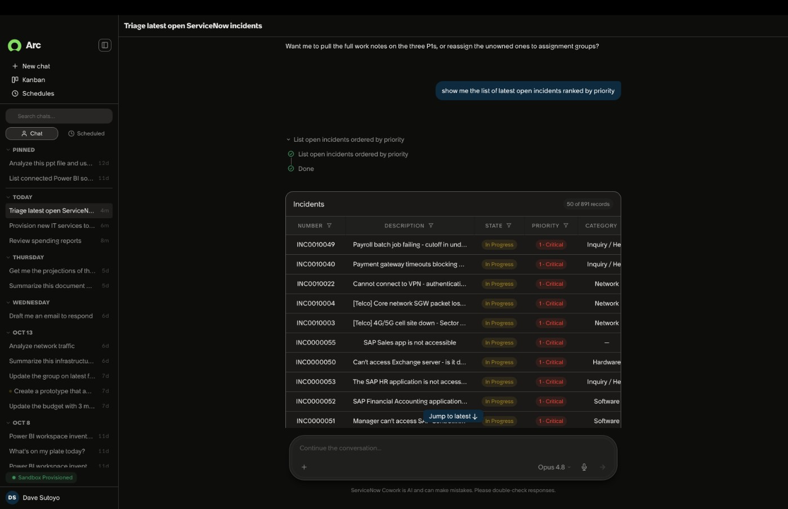

任务与证据
个人代理进入企业后，最有价值的工作往往不是回答一个孤立问题，而是把会议之后的邮件、系统更新、任务检查和再次沟通连起来。员工现在充当这些应用之间的协调者：知道哪个决定来自哪次会议，谁还没有回复，以及下一步需要进入哪个系统。Arc的主张是接过这种持续跟进，而不仅仅起草一封邮件。因此评价它时，应把一次任务从提出到真正收尾的全过程作为单位，而不是只测第一条回复是否自然。
ServiceNow Arc · 产品 · 企业个人代理
同一项目的完整分析。研究截止为14:00:02Z；来源核验与图片获取在后，不改变事件日期。

个人代理进入企业后，最有价值的工作往往不是回答一个孤立问题，而是把会议之后的邮件、系统更新、任务检查和再次沟通连起来。员工现在充当这些应用之间的协调者：知道哪个决定来自哪次会议，谁还没有回复，以及下一步需要进入哪个系统。Arc的主张是接过这种持续跟进，而不仅仅起草一封邮件。因此评价它时，应把一次任务从提出到真正收尾的全过程作为单位，而不是只测第一条回复是否自然。
原始发布描述代理能够围绕较长时间跨度的目标规划、执行、检查并调整，连接ServiceNow、邮件、Teams和其他生产力工具。厂商也提出在缺少现成连接时生成集成，以及用本地RTX模型处理常规工作、把较复杂任务交给前沿模型。这些设计可能减少来回配置和上下文重建，但尚未经过本次研究的产品实测。生成一个可以调用的接口，与确认它只访问必要数据、只执行授权动作并正确处理错误，仍是不同层次的问题。
交互设计的重点应是让员工看得懂代理正在替自己推进什么。一个跨数天的任务，可能在执行期间遇到会议改期、权限变更、应用状态改变或网络中断。用户需要知道哪些步骤完成、哪些仍在等待，以及哪里需要人工判断。发布材料中的企业策略和运行隔离为这种管理提供方向，却没有完整证明每类业务动作的回滚契约。若任务失败后需要员工重建全部上下文，持续代理的优势会被修复成本抵消。
可用性必须拆开写。ServiceNow的原始发布称Arc当日GA，并纳入EmployeeWorks Foundation、Advanced和Prime，不额外收取Arc费用；这不代表客户可以免费获得底层企业订阅。Mac是当前可用平台，Windows预计数周后提供。另一个合作页面把相关新闻卡片标成10月16日，与10月21日的正式发布有日期冲突，因此可以明确报道此次GA声明，却不应宣称Arc名称在今天才第一次公开。
AI Passport需要独立保留未来时态。发布描述它将用于携带经过证明的身份、任务背景和权限范围，并支持动作层面的限制；与硬件运行时结合、快速撤销等主张，也不能直接转写成所有现有客户已经获得的防护。把个人代理和未来治理能力放在同一篇发布稿中，是厂商的产品路线叙事，不等于它们拥有相同的交付日期。读者应能一眼区分现在可以买到的入口与仍待交付的治理层。
竞争比较可以从已有ServiceNow流程、Copilot或Gemini代理，以及员工自己维护的待办清单开始。Arc的优势假设是持续保留跨应用任务上下文，代价则包括管理员配置、用户审批、模型使用和失败修复。可证伪的试点应选一类真实重复任务，比较最终完成率、人工介入分钟数及错误后的恢复时间。如果节省的跟进时间大于审批和修复负担，产品才改变工作方式；如果员工仍要在每个应用里重新确认全部动作，它可能只是增加一个协调界面。